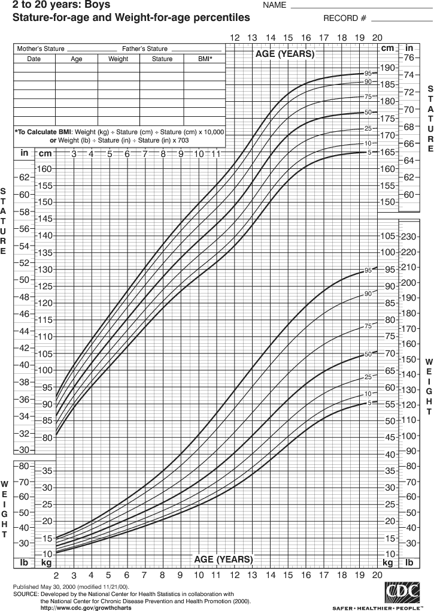

Healthy Living...Easier said than done right? A healthy well balanced lifestyle makes a happy and a lively home for you and your family. This healthy lifestyle can be brought about through diet, exercise and spending quallity time with friends and family.
Food plays a great role in keeping your health. Your food lifestyle can either help or harm you. Eat clean but make sure you and your family enjoy the meal. Check out some great home recipieshere.
A healthy mind makes a healthy body. Sleep well and keep yourself tension free. Play games with your kids and spend quality time with your elders. Exercise and yoga keep both your mind and body fit as a fiddle.
Going futher ahead, we will show you the importance of diet and exercise and also some great tips on how to monitor your kids' health as well as yours. Stay healthy and happy :)
Ever heard of counting calories and uncontrolable cheat days? Well you are not alone. What makes a good diet, be it a child, a teen or an adult, is not the amount of food or calories) that goes in but, the type of calories they are. Food consists of three major kinds of nutrients called Macros. These include Carbohydrates, Proteins and Fats. Making sure your diet incorporates these macros in proper amounts can ensure that you have a well balanced meal that keeps you healthy and full. These ratios differ for kids and adults and also according to your lifestyle. The Average Macronutrient Distribution Range is as follows:
- Carbohydrates = 45-60%
- Proteins = 10-35%
- Fats = 20-35%

Older adults, athletes and children need higher percentages of protein in their food and so do adults who are keen on building muscle mass. A much higher percentage of fat is required by infants and toddlers which decreases with increase in age. An important point to be noted is that the fats have to be consumed with attention to the type of fats they are. Saturated fats should not go over 10% of the daily diet
The overall mental, physical, emotional and social development of a child is extremely important. A very strongly rooted healthy lifestyle can keep the child healthy for life. It is very important that we get children to follow a healthy lifestyle from their very early years. Kids need a lot more food and a lot more balanced diet incorporating a lot of unsaturated fats, proteins, iron, calcium, other micronutrients and a lot of fluids to keep them energized the entire day and also give enough nutrition for their growth. Daily exercise, outdoor team sports and cultural activities are a must for holistic development of the child. Last but not the least, make sure you spend quality time with your child and allow them to spend time with the elders. Have the entire family together at the dinner table. Monitor the growth of the child in every area.
Regular health exams and tests can help find problems before they start. They also can help find problems early, when your chances for treatment and cure are better. By getting the right health services, screenings, and treatments, you are taking steps that help your chances for living a longer, healthier life. Your age, health and family history, lifestyle choices and other important factors impact what and how often you need healthcare. A little intro to the types of checks taken:
- For newborns and children. Most newborns are offered a blood test to check for the presence of particular metabolic or genetic disorders including phenylketonuria (PKU), hypothyroidism and cystic fibrosis. A newborn’s height, weight and head circumference are also measured.
- 20s and 30s. While you’re likely in the prime of your life and the last thing on your mind may be health problems, that’s exactly why health checks even at this age are important. Knowing some key information about your health status can let you and your GP know if there are any particular issues you need to start keeping an eye on to help prevent future health conditions.
- 40s. In your 40s, you may be distracted by career and/or family but it’s important not to neglect your health at this time. Make sure to continue with the regular checks you were getting in your 20s and 30s including blood pressure, cholesterol and glucose levels, Pap tests, dental checks, skin cancer checks and healthy weight assessments.
- 50s and later. As you move into your 50s, regular preventive health checks with your GP become even more important. Make sure to continue with the regular checks you were getting in previous years including eye checks, blood pressure, cholesterol and glucose levels, Pap tests, dental checks, skin cancer checks and healthy weight assessments.
These calculators will help you check your fitness level. Have a happy and a healthy life ahead!